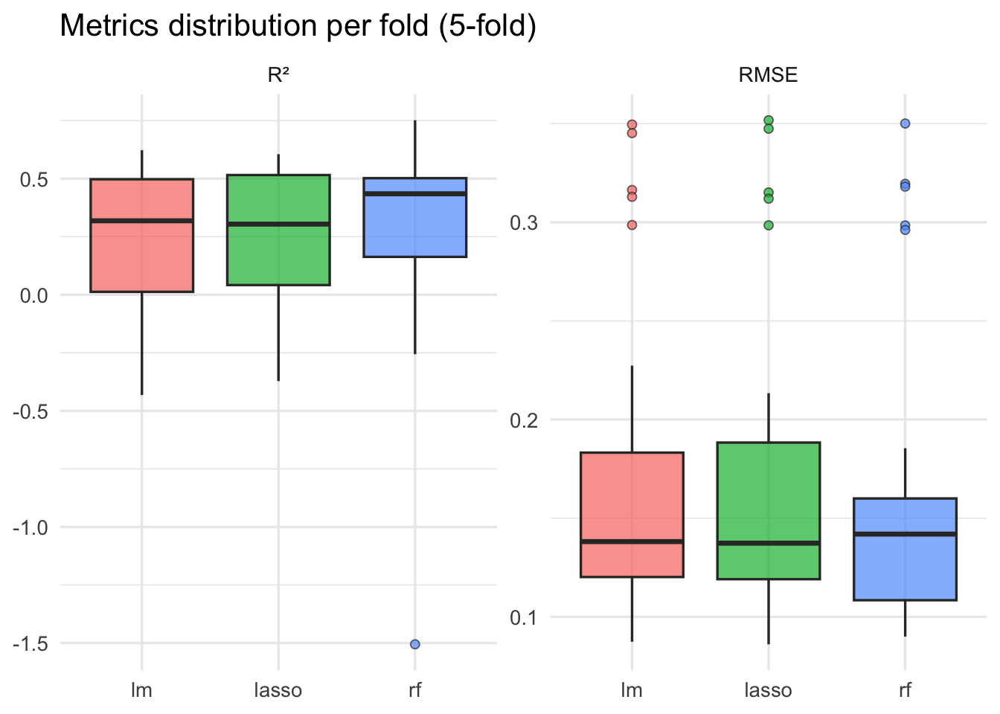
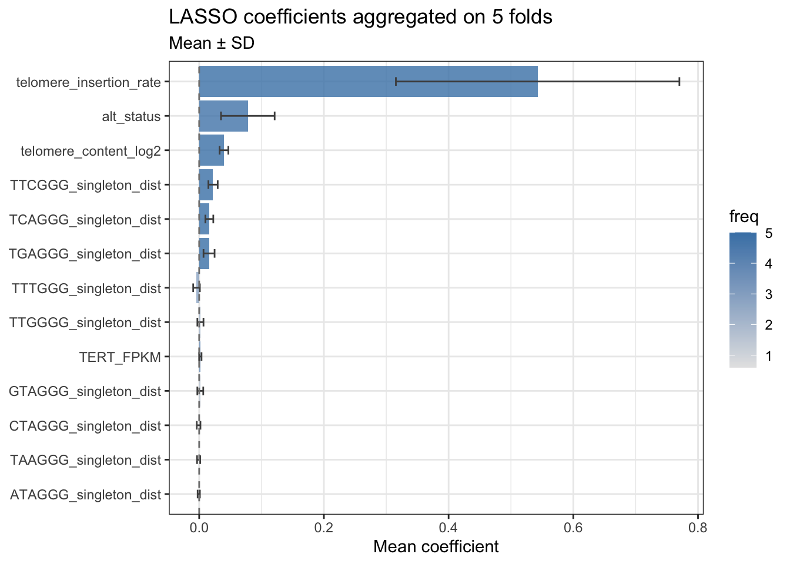
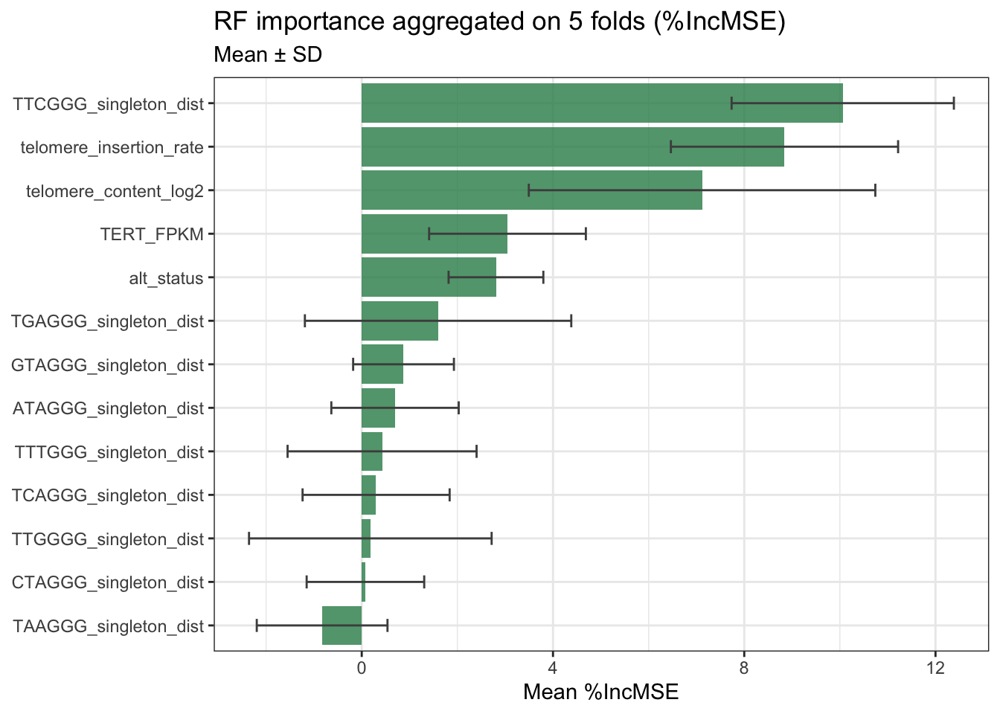
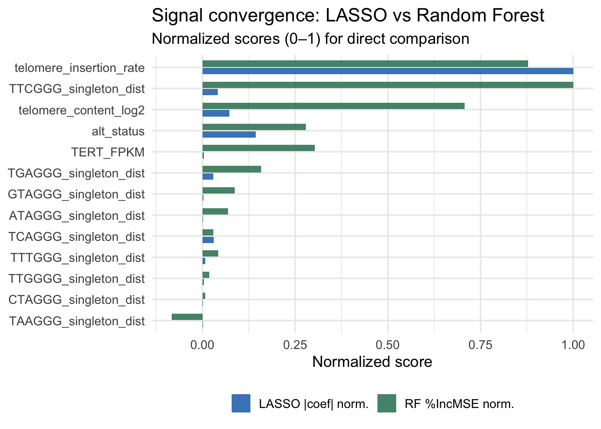
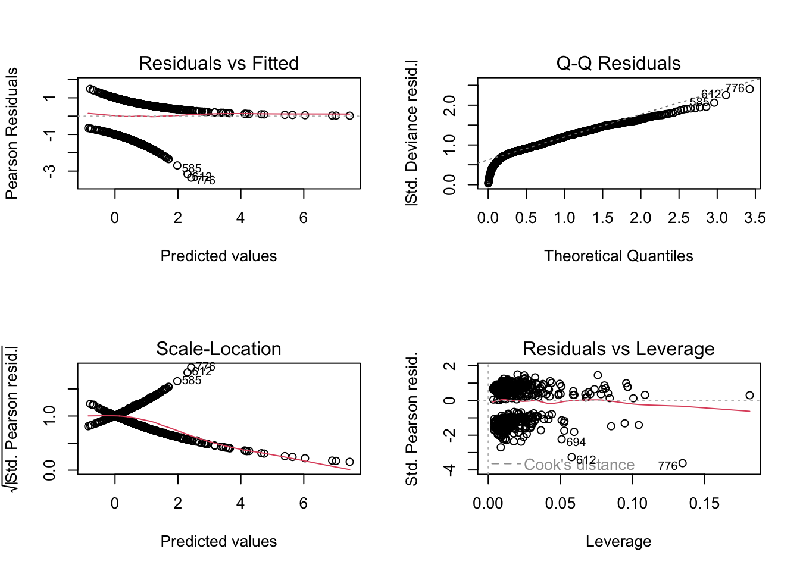
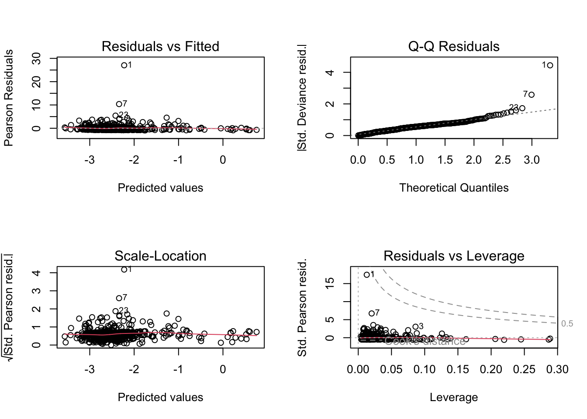
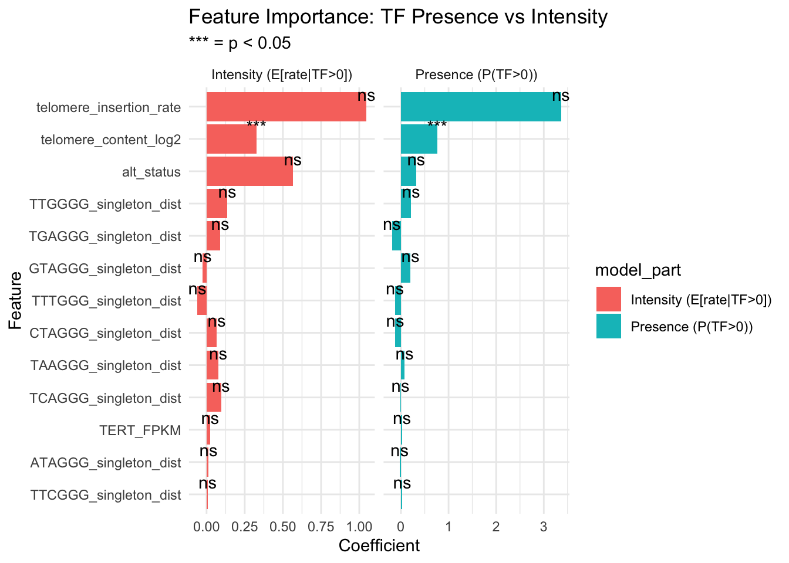

# A tibble: 3 × 5
model rmse_mean rmse_sd r2_mean r2_sd
<chr> <dbl> <dbl> <dbl> <dbl>
1 rf 0.166 0.0806 0.284 0.444
2 lasso 0.173 0.0835 0.271 0.284
3 lm 0.174 0.0829 0.246 0.32513_tTF_regression_primary
Setup
Since we are in a regression task, it is better to have a distribution for our response variable as symmetric as possible. We know it is currently strongly skewed, thus we can apply a log1p transformation to deal with its asymmetry and its zero values. We can do the same also for similarly distributed features, such as telomere insertion.
We also drop unwanted columns and recode alt_status as 0 (ALT-low) and 1 (ALT-high).
Split the dataset
We split the dataset with a 70/30 split in training set and test set. We won’t touch the latter until final performance estimation, to avoid data leakage.
Metrics functions
We define functions to help us in the evaluation of the performances of the models. In particular we will use RMSE and R squared.
Manual Cross-Validation
We use a 5-fold cross-validation on the training set. We do it manually to have to possibility to further extend to other metrics, methods, or whatever.
CV results
Averages and standard deviations on 5 folds.

Feature importance : LASSO
For each feature we register in how many folds is has been selected from Lasso and the mean/SD of the coefficient. A feature selected in all folds with a stable coefficient should be a strong enough signal. Otherwise, rarely selected features or unstable coefficients must be interpreted carefully.
# A tibble: 13 × 5
feature n_selected freq coef_mean coef_sd
<chr> <int> <dbl> <dbl> <dbl>
1 telomere_insertion_rate 25 5 0.543 0.227
2 telomere_content_log2 25 5 0.0398 0.00703
3 TTCGGG_singleton_dist 25 5 0.0222 0.00746
4 TCAGGG_singleton_dist 25 5 0.0163 0.00633
5 TGAGGG_singleton_dist 25 5 0.0158 0.00888
6 alt_status 24 4.8 0.0780 0.0430
7 TERT_FPKM 19 3.8 0.00185 0.00190
8 TTTGGG_singleton_dist 14 2.8 -0.00425 0.00535
9 TTGGGG_singleton_dist 11 2.2 0.00200 0.00490
10 GTAGGG_singleton_dist 8 1.6 0.00179 0.00474
11 TAAGGG_singleton_dist 4 0.8 -0.000878 0.00251
12 ATAGGG_singleton_dist 4 0.8 -0.000668 0.00179
13 CTAGGG_singleton_dist 3 0.6 -0.000934 0.00295
Feature importance: Random Forest
# A tibble: 13 × 3
feature inc_mse_mean inc_mse_sd
<chr> <dbl> <dbl>
1 TTCGGG_singleton_dist 10.1 2.32
2 telomere_insertion_rate 8.84 2.38
3 telomere_content_log2 7.12 3.62
4 TERT_FPKM 3.05 1.64
5 alt_status 2.81 0.991
6 TGAGGG_singleton_dist 1.60 2.79
7 GTAGGG_singleton_dist 0.874 1.05
8 ATAGGG_singleton_dist 0.696 1.33
9 TTTGGG_singleton_dist 0.426 1.98
10 TCAGGG_singleton_dist 0.301 1.54
11 TTGGGG_singleton_dist 0.180 2.54
12 CTAGGG_singleton_dist 0.0774 1.23
13 TAAGGG_singleton_dist -0.828 1.37 
Comparison LASSO vs RF: do they agree?

Final evaluation on test set
Let’s fit each model on the whole training set and evaluate on the test set.
# A tibble: 3 × 3
model rmse r2
<chr> <dbl> <dbl>
1 Random Forest 0.119 0.438
2 LASSO 0.124 0.392
3 LM 0.127 0.366Quantification of the residuals
Beware that these results are in log1p scale!
# A tibble: 246 × 5
true pred error abs_error perc_error
<dbl> <dbl> <dbl> <dbl> <chr>
1 1.10 0.0786 -1.02 1.02 -92.8%
2 0.931 0.926 -0.00498 0.00498 -0.5%
3 0.870 0.866 -0.00377 0.00377 -0.4%
4 0.861 0.768 -0.0936 0.0936 -10.9%
5 0.747 0.651 -0.0958 0.0958 -12.8%
6 0.677 0.220 -0.457 0.457 -67.5%
7 0.627 0.0814 -0.546 0.546 -87%
8 0.572 0.147 -0.425 0.425 -74.3%
9 0.513 0.144 -0.368 0.368 -71.8%
10 0.501 0.0527 -0.449 0.449 -89.5%
11 0.475 0.132 -0.343 0.343 -72.2%
12 0.462 0.836 0.374 0.374 80.8%
13 0.422 0.406 -0.0164 0.0164 -3.9%
14 0.366 0.812 0.446 0.446 121.8%
15 0.316 0.135 -0.181 0.181 -57.4%
16 0.278 0.107 -0.171 0.171 -61.4%
17 0.253 0.0442 -0.208 0.208 -82.5%
18 0.246 0.0399 -0.206 0.206 -83.8%
19 0.195 0.0284 -0.167 0.167 -85.5%
20 0.190 0.115 -0.0756 0.0756 -39.7%
21 0.168 0.208 0.0396 0.0396 23.6%
22 0.166 0.197 0.0311 0.0311 18.7%
23 0.164 0.329 0.165 0.165 100.4%
24 0.160 0.153 -0.00718 0.00718 -4.5%
25 0.155 0.0660 -0.0887 0.0887 -57.3%
26 0.153 0.0405 -0.112 0.112 -73.5%
27 0.141 0.0577 -0.0834 0.0834 -59.1%
28 0.139 0.174 0.0352 0.0352 25.4%
29 0.138 0.233 0.0952 0.0952 69%
30 0.135 0.0362 -0.0988 0.0988 -73.2%
31 0.134 0.0535 -0.0809 0.0809 -60.2%
32 0.127 0.0344 -0.0930 0.0930 -73%
33 0.126 0.0322 -0.0942 0.0942 -74.5%
34 0.116 0.0276 -0.0882 0.0882 -76.2%
35 0.113 0.0510 -0.0616 0.0616 -54.7%
36 0.110 0.0366 -0.0739 0.0739 -66.9%
37 0.106 0.0562 -0.0499 0.0499 -47%
38 0.102 0.136 0.0343 0.0343 33.6%
39 0.0960 0.0351 -0.0608 0.0608 -63.4%
40 0.0955 0.0433 -0.0522 0.0522 -54.7%
41 0.0928 0.0391 -0.0536 0.0536 -57.8%
42 0.0906 0.0485 -0.0421 0.0421 -46.5%
43 0.0885 0.0356 -0.0529 0.0529 -59.8%
44 0.0884 0.0387 -0.0497 0.0497 -56.2%
45 0.0869 0.192 0.105 0.105 120.4%
46 0.0861 0.0822 -0.00384 0.00384 -4.5%
47 0.0858 0.0385 -0.0473 0.0473 -55.1%
48 0.0854 0.103 0.0180 0.0180 21.1%
49 0.0849 0.0724 -0.0125 0.0125 -14.7%
50 0.0841 0.0858 0.00171 0.00171 2%
# ℹ 196 more rows# A tibble: 1 × 6
mean_error sd_error mae median_ae max_ae rmse
<dbl> <dbl> <dbl> <dbl> <dbl> <dbl>
1 0.00972 0.119 0.0637 0.0354 1.02 0.119
Call:
glm(formula = I(tf_rate > 0) ~ ., family = binomial(link = "logit"),
data = clean_data)
Coefficients:
Estimate Std. Error z value Pr(>|z|)
(Intercept) 1.047805 0.120513 8.695 < 2e-16 ***
alt_status 0.322264 0.590810 0.545 0.5854
telomere_insertion_rate 3.362327 2.691850 1.249 0.2116
telomere_content_log2 0.762429 0.127911 5.961 2.51e-09 ***
TERT_FPKM 0.022886 0.030783 0.743 0.4572
ATAGGG_singleton_dist -0.025967 0.083248 -0.312 0.7551
CTAGGG_singleton_dist -0.117171 0.118691 -0.987 0.3235
GTAGGG_singleton_dist 0.201455 0.152692 1.319 0.1871
TAAGGG_singleton_dist 0.080441 0.084700 0.950 0.3423
TCAGGG_singleton_dist -0.006071 0.093894 -0.065 0.9484
TGAGGG_singleton_dist -0.189038 0.127957 -1.477 0.1396
TTCGGG_singleton_dist 0.029108 0.096976 0.300 0.7641
TTGGGG_singleton_dist 0.213684 0.126744 1.686 0.0918 .
TTTGGG_singleton_dist -0.126750 0.122500 -1.035 0.3008
---
Signif. codes: 0 '***' 0.001 '**' 0.01 '*' 0.05 '.' 0.1 ' ' 1
(Dispersion parameter for binomial family taken to be 1)
Null deviance: 1040.99 on 816 degrees of freedom
Residual deviance: 969.49 on 803 degrees of freedom
AIC: 997.49
Number of Fisher Scoring iterations: 6
Call:
glm(formula = tf_rate ~ ., family = Gamma(link = "log"), data = df_positive)
Coefficients:
Estimate Std. Error t value Pr(>|t|)
(Intercept) -2.468793 0.084085 -29.361 < 2e-16 ***
alt_status 0.566179 0.386047 1.467 0.143076
telomere_insertion_rate 1.047073 0.702971 1.489 0.136952
telomere_content_log2 0.326729 0.090224 3.621 0.000321 ***
TERT_FPKM 0.024302 0.014669 1.657 0.098177 .
ATAGGG_singleton_dist 0.013519 0.076686 0.176 0.860134
CTAGGG_singleton_dist 0.067442 0.103708 0.650 0.515777
GTAGGG_singleton_dist -0.025288 0.127374 -0.199 0.842705
TAAGGG_singleton_dist 0.076651 0.073311 1.046 0.296241
TCAGGG_singleton_dist 0.095054 0.080857 1.176 0.240291
TGAGGG_singleton_dist 0.090735 0.090570 1.002 0.316890
TTCGGG_singleton_dist 0.007846 0.070060 0.112 0.910879
TTGGGG_singleton_dist 0.136361 0.108755 1.254 0.210454
TTTGGG_singleton_dist -0.060167 0.105631 -0.570 0.569193
---
Signif. codes: 0 '***' 0.001 '**' 0.01 '*' 0.05 '.' 0.1 ' ' 1
(Dispersion parameter for Gamma family taken to be 2.434539)
Null deviance: 723.53 on 543 degrees of freedom
Residual deviance: 414.12 on 530 degrees of freedom
AIC: -1528.7
Number of Fisher Scoring iterations: 15


# A tibble: 13 × 3
term avg_abs_coef n_sig
<chr> <dbl> <int>
1 telomere_insertion_rate 2.20 0
2 telomere_content_log2 0.545 2
3 alt_status 0.444 0
4 TTGGGG_singleton_dist 0.175 0
5 TGAGGG_singleton_dist 0.140 0
6 GTAGGG_singleton_dist 0.113 0
7 TTTGGG_singleton_dist 0.0935 0
8 CTAGGG_singleton_dist 0.0923 0
9 TAAGGG_singleton_dist 0.0785 0
10 TCAGGG_singleton_dist 0.0506 0
11 TERT_FPKM 0.0236 0
12 ATAGGG_singleton_dist 0.0197 0
13 TTCGGG_singleton_dist 0.0185 0